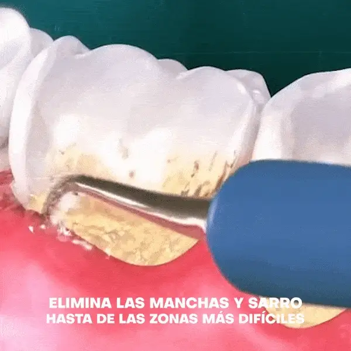

Las limpiezas dentales profesionales deberían hacerse en el consultorio dental dos veces
al año, idealmente cada seis meses. Esta es la recomendación tanto para adultos como para niños,
para mantener la salud dental.
¿Duele?
Depende de el estado de tus encías, la cantidad de sarro acumulado y la sensibilidad
dental que tengas, la limpieza dental puede doler o pasar desapercibida, cuanto más
tiempo has pasado sin hacerte una más sarro se acumula, te recomendamos no dejar pasar
mucho tiempo entre una y otra , acude a nuestros servicios.

Nuestros tratamientos están diseñados para cubrir las necesidades específicas de cada paciente.